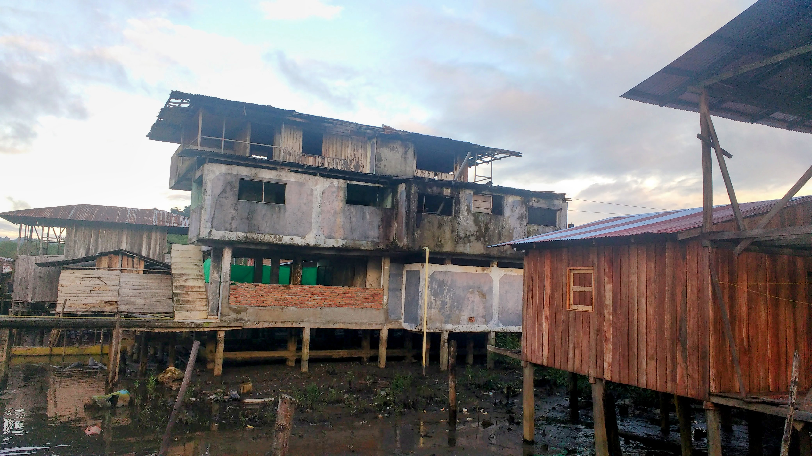
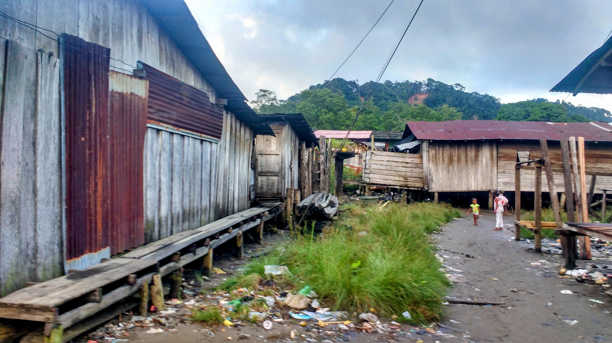
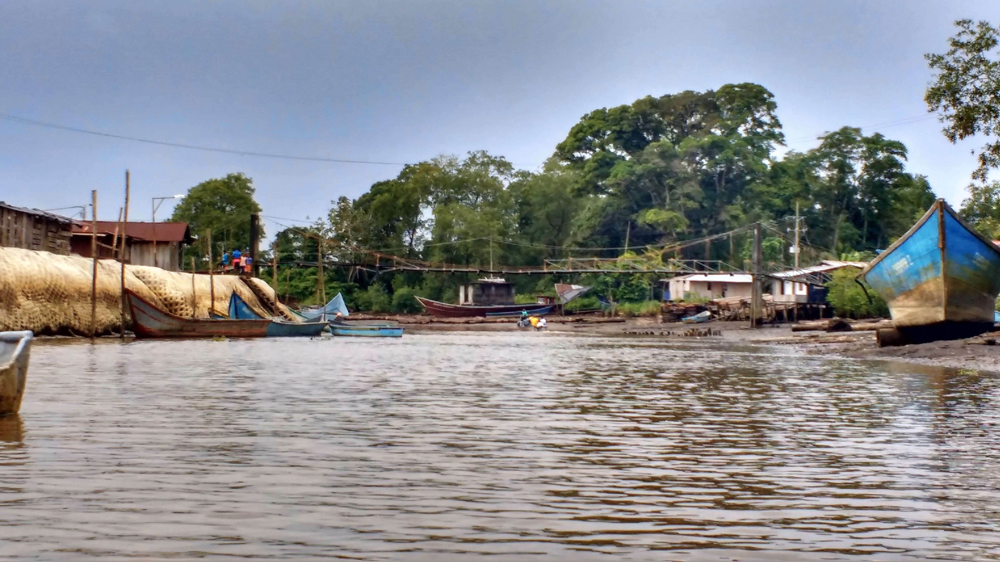

Giovanny Alvarez
Why violence persists and changes shape rather than ending when civil wars do.
I am a Visiting Assistant Professor in the Department of Political Science, International Studies, and Modern Languages at the University of St. Thomas in Houston. I completed my Ph.D. in Public Policy at the University of North Carolina at Chapel Hill in 2026.
My dissertation, The Price of Elite Peace, develops a dual-arena theory of post-conflict violence. I argue that peace interventions designed to solve elite-level commitment problems — amnesties, negotiated settlements, and consent-based counternarcotics programs — systematically displace risk onto the communities where the wars were actually fought. The project has been supported by a Dissertation Completion Fellowship from the International Studies Association and a Saperstein Research Fellowship at Wayne State University.
I also build data others can use. The U.S. Aid to Security Sector Actors (USASSA) dataset converts unclassified U.S. security assistance records from 2000 onward into analytical typologies, making it possible to evaluate how different forms of security aid affect conflict and human rights outcomes.
I bring an unusual vantage point to these questions. Before graduate school I spent more than fifteen years implementing the policies I now evaluate — coordinating violence prevention for a USAID/Chemonics program in Colombia, working on transitional justice at UNDP, and conducting human rights research at Colombia's Defensoría del Pueblo. I have taught at the undergraduate and graduate levels in both the United States and Colombia, and I teach in English and Spanish.



Fieldwork in Tumaco and along Colombia's Pacific coast, home to Afro-Colombian and Indigenous communities disproportionately affected by post-conflict violence. My research examines how peace processes and transitional justice mechanisms reach — or fail to reach — marginalized populations in remote regions like these.
Research
Post-conflict violence, transitional justice, and U.S. security assistance, with a regional focus on Latin America.
Peer-Reviewed Publications
- The Economic Spoiler's Incentive: How Consent-Based Counternarcotics Policy Fueled Violence in Post-Conflict Colombia
- Building Partner Capacity: US Aid to Security Sector Actors
- Rediscovering Europe? The Aid Dilemmas During and After Plan Colombia
Working Papers
- Pacifying Elites, Endangering Communities: A Dual-Arena Theory of Post-Conflict Violence Under review
- Dual Arenas of Violence: Elite Bargaining, Local Insecurity, and the Conditions for Comprehensive Peace in Ongoing Civil Wars In progress
U.S. Aid to Security Sector Actors (USASSA)
A comprehensive dataset tracking unclassified U.S. security assistance from 2000 to the present. It transforms detailed funding records into analytical aid typologies, enabling researchers to evaluate how different forms of security assistance affect conflict dynamics and human rights outcomes.
Teaching
Currently teaching at the University of St. Thomas, Fall 2026. Full teaching portfolio →
International Politics
International Political Economy
Latin American Economic Development
Trajectory
Two decades across human rights fieldwork, multilateral peace policy, and academic research.
Human Rights Research
Defensoría del Pueblo, CREDHOS & the Presidency, Colombia
Transitional Justice Specialist
UNDP · Victims' component of the peace talks
Prevention Component Coordinator
USAID / Chemonics International, Colombia
Rotary Peace Fellow
M.A. Global Studies, UNC-Chapel Hill
Ph.D., Public Policy
UNC-Chapel Hill
Visiting Assistant Professor
University of St. Thomas, Houston
Contact
I welcome inquiries about research, collaboration, data, and teaching.
- Email: gioralvarez@outlook.com
- LinkedIn: giovannyalvarez
- GitHub: GiovannyRAlvarez
- ORCID: 0000-0002-3709-9679